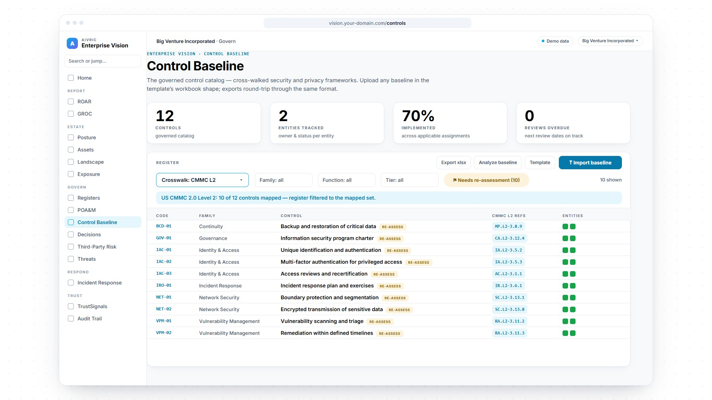

CMMC compliance · Level 2 readiness · AiVRIC Enterprise VisionCMMC is paused. Use the pause.
Paused Phase 2 suspended July 13, 2026 · CMMC paused in Phase 1
Active NIST SP 800-171 self-assessments · 72-hour incident reporting
On July 13, 2026 the Department suspended CMMC Phase 2, which had been due on November 10, 2026, and the milestones after it. CMMC is paused in Phase 1 while a review runs, and no restart date has been set. What contractors owe hasn’t moved: the 110 practices of NIST SP 800-171 Rev 2, a current self-assessment, and incident reports within 72 hours. AiVRIC Enterprise Vision maps your controls to those practices, links the evidence an assessor asks for, publishes your System Security Plan, and keeps every open POA&M item on the clock.

Screens rebuilt from the Big Venture Incorporated demo workspace in Enterprise Vision. All figures are sample data. Not legal advice.
What is CMMC compliance?
The Pentagon’s proof that you protect its data.
CMMC (Cybersecurity Maturity Model Certification) is the Department of Defense program that verifies contractors protect Federal Contract Information and Controlled Unclassified Information (CUI). Level 2 covers the 110 security requirements of NIST SP 800-171 Revision 2, which the CMMC rule still uses even though NIST has since published Revision 3.
Level 115 basic safeguards for Federal Contract Information. Annual self-assessment and affirmation; no POA&M.
Level 2110 NIST SP 800-171 Rev 2 practices for CUI. Self-assessment or C3PAO assessment every three years, as the contract specifies; C3PAO requirements are suspended for now.
Level 3Level 2 (C3PAO) plus 24 selected NIST SP 800-172 requirements, assessed by DCMA DIBCAC. Part of the suspended later phases.
The CMMC rollout
Four phases on paper. One in effect.
- Nov 10, 2025Phase 1
The DFARS rule takes effect: DoD intends to require Level 1 or Level 2 self-assessments as a condition of award. Source
- Nov 10, 2026Phase 2
Was to add Level 2 (C3PAO) certification as a condition of award. Suspended on July 13, 2026, with the milestones after it. Source
- PausedPhase 1 continues
DoD enforces NIST SP 800-171 Rev 2 through self-assessments and select government-led assessments while a review runs. Source
- RestartNo date yet
DoD hasn’t announced when Phase 2 or the later phases will resume, or in what form. Source
Status as of November 10, 2026. The CMMC rule (32 CFR Part 170) still sets the original phase dates; the suspension was made by memo and contracting guidance, not by changing the rule. The rule · The suspension · DoD CIO
CMMC compliance software · seven words
Assessment-ready in one workspace.
10 / 12controls cross-walked to CMMC Level 2 practices on the first import
83%CMMC L2 coverage in the GROC compliance report
v1.0System Security Plan approved, published and frozen
180days: the conditional window every open POA&M item is tracked against
Figures from the Big Venture Incorporated demo workspace (sample data), Sep 26, 2026.
Free tool · CMMC Level 2 readiness check
How many of the 110 can you prove today?
Tick each NIST SP 800-171 family you could evidence to an assessor tomorrow. Your answers stay in this browser.
CMMC in AiVRIC Enterprise Vision
Your CMMC program, in your own workspace.
What you run
From the baseline to the assessor.
- Import your baseline and cross-walk it to CMMC Level 2 practices
- Link evidence where it already lives: SharePoint, Drive or Box
- Write, approve and publish your System Security Plan
- Track every POA&M item to assessor validation
Where it runs
Your deployment, your record.
- Hosted on Google Cloud in the US, with a dedicated environment on request
- Your own workspace, isolated in the database
- Named users only, with single sign-on and MFA at your identity provider
- Every control, decision and action on an append-only audit trail
Questions
What contractors ask first.
What is CMMC compliance?
CMMC is the Department of Defense’s Cybersecurity Maturity Model Certification. It verifies that contractors protect Federal Contract Information and Controlled Unclassified Information. Level 2, the level for contracts involving CUI, covers the 110 security requirements of NIST SP 800-171 Revision 2.
Is CMMC Phase 2 in effect?
No. Phase 2, scheduled for November 10, 2026, was suspended on July 13, 2026 together with the later milestones. CMMC is paused in Phase 1, and DoD enforces NIST SP 800-171 Revision 2 through self-assessments and select government-led assessments. No restart date has been announced as of November 10, 2026.
What are the CMMC Level 2 requirements?
The 110 practices of NIST SP 800-171 Revision 2, grouped into 14 families such as Access Control, Identification and Authentication, Incident Response and System and Communications Protection, plus a System Security Plan describing how each practice is met.
What is an SPRS score?
The Supplier Performance Risk System holds the result of your NIST SP 800-171 assessment under DoD’s assessment methodology. A perfect score is 110; unmet requirements subtract weighted points, and a score can be negative. DFARS assessment requirements ask for a current assessment, no more than three years old, posted in SPRS.
Can we pass with open POA&M items?
Sometimes. Under the CMMC rule, conditional Level 2 status needs a score of at least 88 of 110, with only one-point requirements left open (plus SC.L2-3.13.11 where encryption is used but not FIPS-validated) and six named requirements, the SSP among them, never allowed on a POA&M. Every open item must be closed within 180 days, or the conditional status expires. Enterprise Vision keeps each item owned, dated and moving to assessor validation.
What is a System Security Plan (SSP)?
The SSP documents your CUI environment and how each Level 2 practice is implemented. Assessors start there. In Enterprise Vision it’s authored, approved and published as a frozen version, so the plan an assessor received stays reproducible.
Do we have to report cyber incidents?
Yes, and the pause doesn’t change it. Under DFARS 252.204-7012, contractors report cyber incidents affecting covered defense information to DoD within 72 hours of discovery, through the DIBNet portal. Enterprise Vision’s incident timeline records every step from the moment you declare.
Does AiVRIC certify us?
No. CMMC assessments and certification come from accredited C3PAOs and DCMA DIBCAC under the DoD program. AiVRIC Enterprise Vision prepares your program and keeps the evidence an assessor asks for on the record.
Use the pause.
The work you do now is the work an assessment checks. See your CMMC Level 2 program in AiVRIC Enterprise Vision. Bring your questions, and we’ll walk you through the practices, the evidence, the SSP and the POA&M on real screens.
Screens show sample data from a fictitious demo workspace. CMMC is a Department of Defense program; CMMC assessments and certification are carried out by accredited assessors and the DoD, not by AiVRIC. This page summarizes CMMC for planning purposes and is not legal advice.